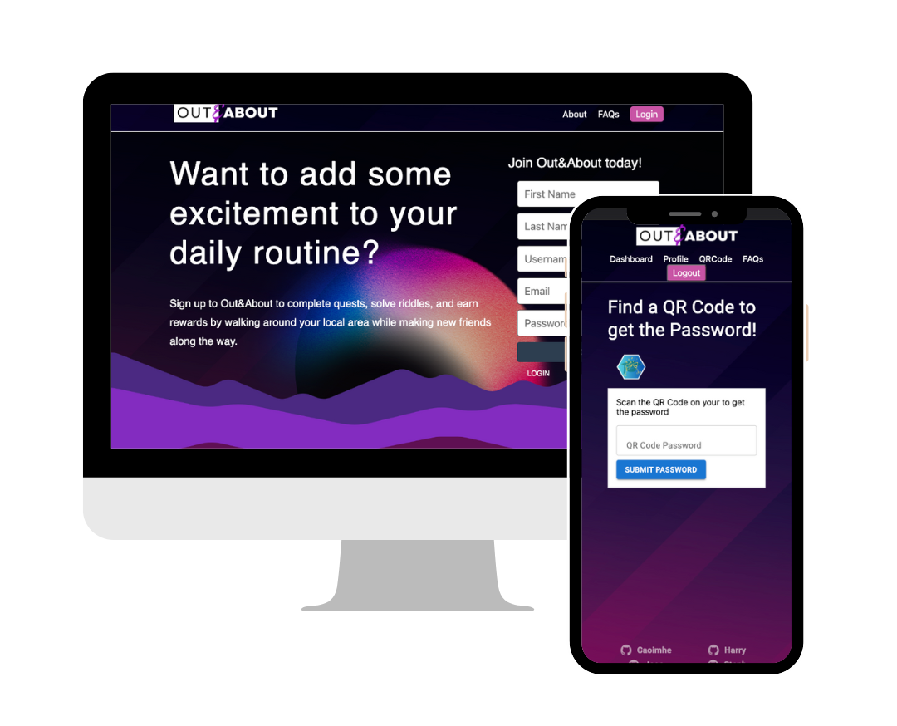

Out and About
Project Overview
Out and About is all about getting outdoors and seeing your local area.
Created as part of the UWA Bootcamp, users answer riddles to get quest routes and then go on an adventure.
A key goal of this project was to encourage users to exercise and get moving without it being the focus.
Languages & Frameworks Used
Want to see more?
If you are interested in learning more about this project, or just want to give it a go yourself - take a look at the links below.